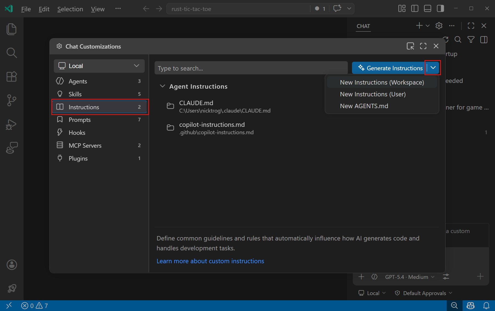

在 VS Code 中使用自定义指令
自定义指令使您可以定义通用指南和规则，这些规则会自动影响 AI 生成代码和处理其他开发任务的方式。无需在每个聊天提示中手动包含上下文，只需在 Markdown 文件中指定自定义指令，即可确保 AI 响应始终符合您的编码规范和项目要求。
您可以将自定义指令配置为自动应用于所有聊天请求，或仅应用于特定文件。此外，您还可以手动将自定义指令附加到特定聊天提示中。
使用 /init 为项目设置 AI 支持，生成针对项目量身定制的自定义指令。
[!TIP]
使用 Agent Customizations 编辑器（预览版）在一个地方发现、创建和管理所有智能体自定义设置。运行聊天：打开自定义设置命令（通过命令面板）。
[!NOTE]
在编辑器中输入时，自定义指令不会应用于内联建议。
指令文件类型
VS Code 支持两类自定义指令。如果项目中包含多个指令文件，VS Code 会将它们合并并添加到聊天上下文中，不保证特定顺序。
始终启用的指令
始终启用的指令会自动包含在每个聊天请求中。适用于项目范围的编码标准、架构决策以及适用于所有代码的约定。
- 单个
.github/copilot-instructions.md文件- 自动应用于工作区中的所有聊天请求
- 存储在工作区内
- 自动应用于工作区中的所有聊天请求
- 一个或多个
AGENTS.md文件- 适用于在工作区中使用多个 AI 智能体的情况
- 自动应用于工作区中的所有聊天请求或特定子文件夹（实验性功能）
- 存储在工作区根目录或子文件夹中（实验性功能）
- 适用于在工作区中使用多个 AI 智能体的情况
- 组织级指令
- 在 GitHub 组织内的多个工作区和仓库之间共享指令
- 在 GitHub 组织级别定义
- 在 GitHub 组织内的多个工作区和仓库之间共享指令
CLAUDE.md文件- 用于与 Claude Code 及其他基于 Claude 的工具兼容
- 存储在工作区根目录、
.claude文件夹或用户主目录中基于文件的指令
- 存储在工作区根目录、
- 用于与 Claude Code 及其他基于 Claude 的工具兼容
基于文件的指令会在智能体正在处理的文件与指定模式匹配，或者描述与当前任务匹配时应用。使用基于文件的指令来定义特定语言的约定、框架模式，或仅适用于代码库特定部分的规则。
- 一个或多个
.instructions.md文件- 通过使用 glob 模式，根据文件类型或位置有条件地应用指令
- 存储在工作区或用户配置中
- 通过使用 glob 模式，根据文件类型或位置有条件地应用指令
要在指令中引用特定上下文（如文件或 URL），可以使用 Markdown 链接。
[!TIP]
应该使用哪种方式？ 从单个.github/copilot-instructions.md文件开始，用于项目范围的编码标准。当需要为不同文件类型或框架设置不同规则时，添加.instructions.md文件。如果在工作区中使用多个 AI 智能体，则使用AGENTS.md。
使用 .github/copilot-instructions.md 文件
VS Code 会自动检测工作区根目录中的 .github/copilot-instructions.md Markdown 文件，并将该文件中的指令应用于此工作区内的所有聊天请求。
将 copilot-instructions.md 用于：
- 适用于整个项目的编码风格和命名约定
- 技术栈声明和首选库
- 应遵循或避免的架构模式
- 安全要求和错误处理方法
- 文档标准
按照以下步骤在工作区中创建 .github/copilot-instructions.md 文件：
- 在工作区根目录下创建
.github/copilot-instructions.md文件。如需要，先创建.github目录。 - 使用 Markdown 格式描述您的指令。为了获得最佳效果，请保持简洁和聚焦。
[!NOTE]
VS Code 也支持使用
AGENTS.md文件来实现始终启用的指令。
---
applyTo: "**"
---
# 项目通用编码标准
## 命名约定
- 组件名称、接口和类型别名使用 PascalCase
- 变量、函数和方法使用 camelCase
- 私有类成员加下划线前缀 (_)
- 常量使用 ALL_CAPS
## 错误处理
- 对异步操作使用 try/catch 代码块
- 在 React 组件中实现适当的错误边界
- 始终记录带有上下文信息的错误使用 .instructions.md 文件
您可以创建基于文件的指令，使用 *.instructions.md Markdown 文件，这些文件会根据智能体正在处理的文件或任务动态应用。
智能体根据指令文件头部的 applyTo 属性中指定的文件模式，或指令描述与当前任务的语义匹配，来确定应用哪些指令文件。
将 .instructions.md 文件用于：
- 前端与后端代码的不同约定
- 单体仓库中的特定语言指南
- 特定模块的框架特定模式
- 测试文件或文档的专项规则
指令文件位置
您可以为特定工作区或在用户级别定义指令，在用户级别定义的指令将应用于所有工作区。下表列出了基于作用域的指令文件的默认文件位置。您可以使用 setting(chat.instructionsFilesLocations) 设置为工作区指令文件配置其他文件位置。
| 作用域 | 默认文件位置 | ||
|---|---|---|---|
| ------- | ----------------------- | ||
| 工作区 | .github/instructions 文件夹 | ||
| 工作区（Claude 格式） | .claude/rules 文件夹 | ||
| 用户配置 | ~/.copilot/instructions、~/.claude/rules 或您的用户数据（特定于您的 VS Code 配置文件） |
VS Code 会递归搜索这些文件夹，使您可以在子目录中组织指令文件。例如，您可以按团队、语言或模块分组：
.github/instructions/
frontend/
react.instructions.md
accessibility.instructions.md
backend/
api-design.instructions.md
testing/
unit-tests.instructions.md以下示例展示了如何配置指令文件位置以仅允许工作区级别的指令：
"chat.instructionsFilesLocations": {
".github/instructions": true,
".claude/rules": true,
"~/.copilot/instructions": false,
"~/.claude/rules": false
}[!TIP]
在单体仓库中，启用 setting(chat.useCustomizationsInParentRepositories) 可以从父仓库根目录发现指令。详细了解父仓库发现。
指令文件格式
指令文件是带有 .instructions.md 扩展名的 Markdown 文件。可选的 YAML 前置元数据头部控制指令何时应用：
| 字段 | 必需 | 描述 | ||
|---|---|---|---|---|
| ------- | ---------- | ------------- | ||
name | 否 | 在 UI 中显示的显示名称。默认为文件名。 | ||
description | 否 | 在聊天视图中悬停时显示的简短描述。 | ||
applyTo | 否 | 定义指令自动应用于哪些文件的 glob 模式，相对于工作区根目录。使用 ** 应用于所有文件。如果未指定，指令不会自动应用，但仍可以手动将其添加到聊天请求中。 |
正文包含 Markdown 格式的指令。要引用智能体工具，请使用 #tool: 语法（例如 #tool:web/fetch）。
---
name: 'Python 标准'
description: 'Python 文件的编码约定'
applyTo: '**/*.py'
---
# Python 编码标准
- 遵循 PEP 8 风格指南。
- 所有函数签名使用类型提示。
- 为公共函数编写文档字符串。
- 使用 4 个空格进行缩进。创建指令文件
创建指令文件时，选择将其存储在工作区还是用户配置中。工作区指令文件仅适用于该工作区，而用户指令文件可用于多个工作区。
创建指令文件的方法：
[!TIP]
在聊天输入框中输入 /instructions 可以快速打开配置指令和规则菜单。
- 在聊天视图中，选择配置聊天（齿轮图标）打开 Agent Customizations 编辑器，然后选择指令选项卡。
- 从下拉菜单中选择新建指令（工作区）或新建指令（用户），取决于您希望将指令文件存储在何处。

或者，也可以使用命令面板（kb(workbench.action.showCommands)）中的聊天：新建指令文件命令。
- 选择位置并为指令文件输入文件名。这是在 UI 中使用的默认名称。
- 使用 Markdown 格式编写自定义指令。
- 填写文件顶部的 YAML 前置元数据，配置指令的描述、名称以及何时应用。
- 在文件正文中添加指令。
- 填写文件顶部的 YAML 前置元数据，配置指令的描述、名称以及何时应用。
您可以在 Agent Customizations 编辑器中打开现有指令文件进行修改。
使用 AI 生成指令文件
您可以使用 AI 生成针对性的指令文件。在聊天中输入 /create-instruction，并描述您想要强制执行的约定或指南（例如"本项目始终使用制表符和单引号"）。智能体会提出澄清问题，并生成一个带有适当 applyTo 模式和内容的 .instructions.md 文件。
您还可以从正在进行的对话中提取指令。例如，如果您在聊天会话期间纠正了智能体的导入风格，可以要求"从中提取一条指令"以将该纠正捕获为项目约定。
[!NOTE]
/create-instruction生成针对性的按需指令文件。要生成工作区范围的始终启用的指令，请改用/init命令。
请注意这些指令如何引用通用编码指南文件。您可以将指令分离到多个文件中，以保持其组织性和专注于特定主题。
---
applyTo: "**/*.ts,**/*.tsx"
---
# TypeScript 和 React 的项目编码标准
将[通用编码指南](./general-coding.instructions.md)应用于所有代码。
## TypeScript 指南
- 所有新代码使用 TypeScript
- 尽可能遵循函数式编程原则
- 使用接口（interface）定义数据结构和类型定义
- 优先使用不可变数据（const, readonly）
- 使用可选链（?.）和空值合并（??）运算符
## React 指南
- 使用带 hooks 的函数组件
- 遵循 React hooks 规则（不使用条件 hooks）
- 对有子组件的组件使用 React.FC 类型
- 保持组件小而专注
- 使用 CSS 模块进行组件样式设置您可以为不同类型的任务创建指令文件，包括编写文档等非开发活动。
---
applyTo: "docs/**/*.md"
---
# 项目文档编写指南
## 通用指南
- 编写清晰简洁的文档。
- 使用一致的术语和风格。
- 在适当的地方包含代码示例。
## 语法
* 使用现在时动词（是、打开）而非过去时（曾经是、打开了）。
* 写事实性陈述和直接命令。避免使用"可以"或"将会"等假设性词语。
* 使用主动语态，主语执行动作。
* 使用第二人称（你）直接与读者交流。
## Markdown 指南
- 使用标题组织内容。
- 使用项目符号表示列表。
- 包含相关资源的链接。
- 使用代码块展示代码片段。更多社区贡献的示例，请参阅 Awesome Copilot 仓库。
使用 AGENTS.md 文件
VS Code 会自动检测工作区根目录中的 AGENTS.md Markdown 文件，并将该文件中的指令应用于此工作区内的所有聊天请求。如果您在工作区中使用多个 AI 智能体，并希望有一套被所有智能体识别的指令，或者希望有适用于单体仓库特定部分的子文件夹级别指令，这非常有用。
在以下情况下使用 AGENTS.md：
- 您使用多个 AI 编码智能体，并希望有一套被所有智能体识别的指令
- 您希望有适用于单体仓库特定部分的子文件夹级别指令
要启用或禁用对 AGENTS.md 文件的支持，请配置 setting(chat.useAgentsMdFile) 设置。
使用多个 AGENTS.md 文件（实验性功能）
在子文件夹中使用多个 AGENTS.md 文件适用于对不同项目部分应用不同指令的情况。例如，可以为前端代码设置一个 AGENTS.md 文件，为后端代码设置另一个。
使用实验性的 setting(chat.useNestedAgentsMdFiles) 设置来启用或禁用对工作区中嵌套 AGENTS.md 文件的支持。
启用后，VS Code 会在工作区的所有子文件夹中递归搜索 AGENTS.md 文件，并将其相对路径添加到聊天上下文中。然后，智能体可以根据正在编辑的文件决定使用哪些指令。
[!TIP]
对于特定文件夹的指令，您也可以使用多个具有不同applyTo模式（匹配文件夹结构）的.instructions.md文件。
使用 CLAUDE.md 文件
VS Code 会自动检测 CLAUDE.md 文件，并将其作为始终启用的指令应用，类似于 AGENTS.md。如果您在 VS Code 之外还使用 Claude Code 或其他基于 Claude 的工具，并希望有一套被所有工具识别的指令，这非常有用。
VS Code 在以下位置搜索 CLAUDE.md 文件：
| 位置 | 描述 | ||
|---|---|---|---|
| ---------- | ------------- | ||
| 工作区根目录 | 工作区根目录下的 CLAUDE.md | ||
.claude 文件夹 | 工作区中的 .claude/CLAUDE.md | ||
| 用户主目录 | ~/.claude/CLAUDE.md，用于所有项目的个人指令 | ||
| 本地变体 | CLAUDE.local.md，用于仅本地指令（不提交到版本控制） |
要启用或禁用对 CLAUDE.md 文件的支持，请配置 setting(chat.useClaudeMdFile) 设置。
[!NOTE]
对于.claude/rules指令文件，VS Code 使用paths属性而不是applyTo来指定 glob 模式，遵循 Claude Rules 格式。paths属性接受一个 glob 模式数组，省略时默认为**（所有文件）。
为工作区生成自定义指令
VS Code 可以分析您的工作区并生成与编码规范及项目结构相匹配的始终启用的自定义指令。这些指令随后会自动应用于工作区中的所有聊天请求。
生成指令时，VS Code 执行以下步骤：
- 发现工作区中现有的 AI 约定，例如
copilot-instructions.md或AGENTS.md文件。 - 分析您的项目结构和编码模式。
- 生成针对项目量身定制的全面工作区指令。
为工作区生成自定义指令的方法：
- 在聊天输入框中输入
/init并按kbstyle(Enter)。 - 输入
/create-instructions，然后描述您想要生成的指令。 - 在 Agent Customizations 编辑器中，从下拉菜单中选择生成指令。
在团队间共享自定义指令
要在 GitHub 组织内的多个工作区和仓库之间共享自定义指令，您可以在 GitHub 组织级别定义它们。
VS Code 会自动检测您的账户有权访问的组织级别定义的自定义指令。这些指令会在聊天指令菜单中与您的个人和工作区指令一起显示，并自动应用于所有聊天请求。
要启用组织级自定义指令的发现，请将 setting(github.copilot.chat.organizationInstructions.enabled) 设置为 true。
在 GitHub 文档中了解如何为组织添加自定义指令。
跨设备同步用户指令文件
VS Code 可以使用设置同步在多个设备之间同步您的用户指令文件。
要同步用户指令文件，请启用设置同步并从命令面板（kb(workbench.action.showCommands)）中运行 Settings Sync: Configure。从要同步的设置列表中选择提示和指令。
在设置中指定自定义指令
[!NOTE]
从 VS Code 1.102 开始，基于设置的代码生成和测试生成指令已被弃用。请改用基于文件的指令。
对于代码审核、提交消息和拉取请求描述，您仍然可以使用 VS Code 设置来定义自定义指令。这些设置接受一个对象数组，每个对象包含 text 属性（内联指令）或 file 属性（Markdown 文件的路径）。
| 场景 | 设置 | ||
|---|---|---|---|
| ---------- | --------- | ||
| 代码审核 | setting(github.copilot.chat.reviewSelection.instructions) | ||
| 提交消息 | setting(github.copilot.chat.commitMessageGeneration.instructions) | ||
| 拉取请求描述 | setting(github.copilot.chat.pullRequestDescriptionGeneration.instructions) |
指令优先级
当存在多种类型的自定义指令时，它们都会提供给 AI。发生冲突时，优先级较高的指令优先：
- 个人指令（用户级别，最高优先级）
- 仓库指令（
.github/copilot-instructions.md或AGENTS.md） - 组织指令（最低优先级）
编写有效指令的提示
- 保持指令简短且自包含。每条指令应为一个单一、简单的陈述。如果需要提供多条信息，请使用多条指令。
- 包含规则背后的原因。当指令解释了约定 _为什么_ 存在时，AI 在边缘情况下会做出更好的决策。例如："使用
date-fns而不是moment.js，因为 moment.js 已被弃用且会增加打包体积。" - 用具体的代码示例展示推荐和应避免的模式。AI 对示例的响应比对抽象规则更有效。
- 关注非显而易见的规则。跳过标准代码检查工具或格式化工具已经强制执行的约定。
- 对于任务或语言特定的指令，使用多个
*.instructions.md文件，每个文件一个主题，并使用applyTo属性选择性地应用它们。 - 将项目特定的指令存储在工作区中，以与其他团队成员共享，并将其纳入版本控制。
- 在提示文件和自定义智能体中重用和引用指令文件，以保持其整洁和专注，并避免重复指令。
- 指令之间的空白字符会被忽略，因此您可以将指令格式化为单个段落、分行显示或用空行分隔以提高可读性。
常见问题解答
为什么我的指令文件没有被应用？
[!TIP]
使用聊天自定义诊断视图查看所有已加载的指令文件及任何错误。在聊天视图中右键单击并选择诊断。详细了解 VS Code 中 AI 的故障排除。
如果您的指令文件没有被应用，请检查以下内容：
- 验证指令文件是否位于正确位置。
.github/copilot-instructions.md文件必须位于工作区根目录下的.github文件夹中。*.instructions.md文件必须位于setting(chat.instructionsFilesLocations)设置指定的文件夹（或其子目录）之一中（默认：.github/instructions），或位于您的用户配置中。 - 对于
*.instructions.md文件，检查applyToglob 模式是否与您正在处理的文件匹配。如果未指定applyTo属性，指令文件不会自动应用。查看聊天响应中的引用部分，了解使用了哪些指令文件。 - 检查相关设置是否已启用：基于模式的指令使用
setting(chat.includeApplyingInstructions)，通过 Markdown 链接引用的指令使用setting(chat.includeReferencedInstructions)，AGENTS.md文件使用setting(chat.useAgentsMdFile)。
对于高级诊断，请在 Chat Debug 视图中检查语言模型请求，或调试 applyTo 匹配逻辑。
如何知道自定义指令文件来自哪里？
自定义指令文件可以来自不同来源：内置、用户配置中定义的、当前工作区中工作区定义的指令、组织级指令或扩展贡献的指令。
要识别自定义指令文件的来源：
- 从命令面板（
kb(workbench.action.showCommands)）中选择聊天：配置指令。 - 在列表中悬停在指令文件上。来源位置会显示在工具提示中。
使用聊天自定义诊断视图查看所有已加载的指令文件及任何错误。在聊天视图中右键单击并选择诊断。详细了解 VS Code 中 AI 的故障排除。